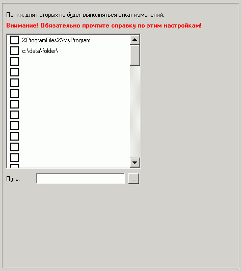

| Rollback (Откат): Исключения |

Здесь можно указать папки-исключения, для которых не будет выполняться авто-восстановление после каждой перезагрузки (откат) и все изменения внутри них будут сохраняться.
Если указан путь на диске, для которого не включен откат, то смысла это иметь не будет.
В путях можно использовать переменные окружения вида %переменная%, однако нельзя использовать переменные, специфические для конкретного пользователя системы, т.к. данные настройки применяются к компьютеру, а не пользователю.
Например, можно использовать %SystemDrive%, но нельзя использовать %UserProfile%.
Важно! Существует ограничение при указании пути на диске, отличном от системного (обычно C:). Если, например, указан путь D:\data\, то это будет означать, что и на диске E:\ для папки \data\ будут сохраняться изменения.
Как решение данной проблемы можно рекомендовать не использовать папки-исключения с одинаковыми именами в случае установки отката на 2 и более логических дисков.
Если откат уже включен и активен на клиентских машинах и вы желаете внести изменения на этой странице, то после их сохранения необходимо отключить откат на две перезагрузки с сохранением изменений через программу оператора!
Это связано с тем, что клиентские настройки для компьютера применяются только после перезагрузки клиентской машины, а также для их сохранения необходимо временное отключение отката. В противном случае изменений не произойдет.
Проконтролировать текущее состояние отката всегда можно через программу оператора.